Think Infinitesimal by Bruce Director
"It is well known that scientific physics has existed only since the invention of the differential calculus," stated Bernhard Riemann in his introduction to his late 1854 lecture series posthumously published under the title, "Partial Differential Equations and their Applications to Physical Questions". For most of his listeners, Riemann's statement would have been fairly straight forward, for they understood the physical significance of Leibniz's calculus as it had percolated over the preceding sesquicentury through the work of Kaestner and Gauss. A far different condition exists, however, for most of today's readers, whose education has been dominated by the empiricism of the Leibniz-hating Euler, Cauchy and Russell. While such victims might find the formal content of Riemann's statement agreeable, its true intention would be as obscure to them as the Gospel of John and Epistles of Paul are to Karl Rove and his legions of true believers.
The empiricist will not understand Riemann's statement, for the simple reason that what he associates with the words "differential calculus" is a completely different idea than what Riemann and Leibniz had in mind. To the victim of today's empiricist-dominated educational system, the infinitesimal calculus concerns only a set of rules for mathematical formalism. But to the scientist, the infinitesimal calculus is a kind of Socratic dialogue, through which man transcends the limitations of sense-perception and discovers those universal principles that govern all physical action.
The empiricist rejects Leibniz's notion, because he accepts Aristotle's doctrine that "physics concerns only objects of sense", whereas Plato, Cusa, Leibniz and Riemann emphasized, physics concerns objects of {thought}. These thought-objects, or "Geistesmassen" as Riemann called them, refer to the universal principles which {cause} the objects of sense to behave the way they are perceived to behave. Not being directly accessible to the senses, such principles appear to come from "outside" the visible world. However, a great mistake is made if one concludes from this, as the sophists do, that these principles come from outside the universe itself. In fact, these principles, being universal, are acting everywhere, at all times, and in every "infinitesimal" interval of action, osculating the objects of sense as if tangent to the visible domain.
It is this relationship between the observed motions of the objects of sense, and the universal principles acting everywhere on them, that Leibniz's differential calculus is designed to express. Through it, a universal principle, as it is seen and unseen, is enfolded into a single thought, showing us what is known, and indicating to us what is yet to be discovered. A scientist who turns away, under Aristotle's, Sarpi's, or Russell's, influence, from these objects of thought, to objects of mere sense, is acting as if his own mind has ceased to exist, which, in fact, it has.
Just as Riemann correctly asserts, that scientific physics began with the invention of the differential calculus, it can be justly stated that the differential calculus began with Cusa's excommunication of Aristotle from science. While it is true that some of the methods of Leibniz's calculus were beginning to develop in the work of Archytas and Archimedes, this development was arrested when Aristotle's doctrines became hegemonic in European culture, following the murder of Archimedes by the Romans. Cusa reversed this disaster and reoriented European science away from its obsession with objects of sense, and back to the Pythagorean/Socratic focus on the idea.
Cusa insisted that perception is not caused by sensible things, but that things are sensible because the mind has the power to sense. In turn, the mind is able to sense, because it possesses a still higher faculty of rationality; and it is able to rationalize because it possesses a still higher faculty of intellect; and it is able to intellectualize because man is created in the infinitesimal image of God.
From this standpoint, Cusa rejected Aristotle's sophism that less change equals greater perfection, which made God a tyrannical force who keeps the world perfect by opposing change. Instead, Cusa recognized that the capacity for change in the physical universe, and in the human mind, indicated the perfectability of both, and that it was God's intention to perfect his Creation through the cognitive powers of Man. Thus, it is the power of the mind to perceive change, not objects, through which Man relates to the physical world and increases his knowledge of, and power in, the universe.
Having freed science to recognize change as primary, Cusa concluded that all physical action must be non-uniform, which Kepler experimentally validated with his discovery that the principle of universal gravitation produces harmonically-related elliptical orbits. As Kepler insisted, the observed changing motion of the planet in its orbit, rather than an apparent deviation from Aristotle's illusory idea of fixed perfection, was, in reality, the intended effect of the principle of universal gravitation, which is acting, universally, but whose effect differs, in every infinitesimally small interval of action. In this respect, Kepler likened the principle of universal gravitation to an idea, (using the Latin word {species} to describe it), but distinguishing it from a human idea, because it lacked the quality of willfulness unique to human cognition. Man could grasp this idea, Kepler understood, by forming a concept (thought-object), which expressed the physical action as a consequence of a universal intention, analogous to, as Cusa emphasized, the way human action is the consequence of human intention. While Kepler made significant progress in creating geometrical expressions for this relationship, he recognized the need for a new form of metaphor, and demanded that future generations make further progress to this end.
It was Leibniz who defined the required concept, to which Riemann refers as the beginning of scientific physics. Leibniz recognized that what was required was a new form of mathematical expression, one that expressed the relationship between the universal principle and its changing effect on the observed motion. Most importantly, this new expression must work in reverse, because that is the way it is encountered in scientific investigation. That is, though the effect of the principle is perceived through the motion, merely describing what is observed states nothing about the principle. To scientifically know the cause of the motion, it is necessary to express the motion as an effect of the principle.
To grasp this thought, Leibniz utilized a form of investigation that had been previously developed by Cusa: the relationship of maximum and minimum. As Cusa specified, the maximum and minimum coincide in God, but in the created world the maximum and minimum appear as opposites. Thus, to know any physical process, it is necessary to have a concept through which the opposite extremes of that physical process are recognized as the maximum and minimum effects of a single, unified, intention. For example, in every interval of an elliptical orbit, the planet's motion is different at the two extremes of that interval, no matter how small an interval is taken. There are but two exceptions. One is the entire orbit, the other is the moment of change itself, which comprise, respectively, the maximum and minimum effect of the principle of universal gravitation on the planet. In the minimum, the universal principle's effect is always different, but it is differing according to a well-defined principle. The mathematical expression of this differentiation, Leibniz called "the differential" which always exists integrated into the whole action. In the latter form, its mathematical expression, was called by Leibniz, "the integral".
From this relationship, Leibniz invented a type of animation, which he called "differential equations", in which the maximum effect is expressed as a function of the minimum. As Riemann noted, this put science on a completely new footing, for in experimental investigations it is the minimum expression that is measured, from which the maximum must be determined, as, for example, in the case of Leibniz's and Bernoulli's determination of the catenary, Gauss's determination of the orbit of Ceres, or, Gauss's or Riemann's investigations in geodesy, geomagnetism, electromagnetism and shock waves. With Leibniz's differential calculus, such investigations could be undertaken, for the first time, with the necessary epistemological rigor.
Of course, Leibniz's differential equations do not express the principle directly. But, they can express the changing effect of the principle at every moment. On this basis, the principle, can be known by inversion, as that idea which produces the effect expressed by the differential equation. To emphasize the point: the differential equation is not the principle, but it expresses the ever changing footprints that the principle leaves on the visible domain. While this description, clothed in either words or geometry, is necessarily ironic, the thought-object to which it refers, is recognized, in the mind, with absolute precision.
It is crucial to emphasize that Leibniz's calculus is a mathematical expression of a physical idea. As is obvious with respect to physical action, the differential and the integral express the minimum and maximum effect of the same universal physical principle. Yet the empiricists attacked Leibniz's calculus by abstracting it from physics and presenting it only as a mathematical formalism. They produced through sophistry, an apparent mathematical paradox, by treating both as if they existed separately from the physical principle they expressed. From this formal mathematical standpoint, the sophist argued, the differential does not exist, because in the moment of change, the time elapsed and distance traversed are both, formally, null. From this, the sophistry continues, the integral can't be expressed, because it is the sum of infinitely many null magnitudes.
Leibniz countered this sophistry by always insisting on the physical nature of his calculus. In a 1702 letter to Varignon, he posed the following paradox to the algebraists:
Construct two similar triangles from the intersection of two lines. (See Figure 1.)
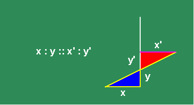
In the construction, the legs of the large triangle are in the same proportion to each other, as the legs of the smaller one. Now, move the oblique line in a motion parallel to its original position. (See animated Figure 2.)
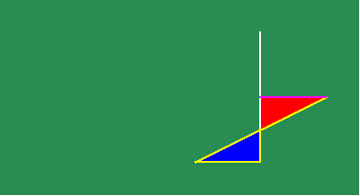
Under this motion, the smaller triangle gets smaller while the larger triangle gets bigger, but the proportionality of their sides remains the same. At some moment, the smaller triangle passes through the point of intersection of the two original lines, emerging, in the next moment, on the other side, to begin growing again.
The algebraists insisted that, at the moment that the small triangle passed through the point, its sides both appeared to be null, and so it is impossible to express their proportion, or more absurdly, that their proportion ceased to exist at that moment. Leibniz countered that the triangle passed through that point as the result of a physical motion, intended to maintain the proportionality of the sides of the triangles. Consequently, it was the motion that produced the constant proportionality, as its intended effect. At the moment the small triangle passed through the point, the motion did not cease and, thus, neither did the proportionality of the triangles. That proportionality reflected a principle of physical action which is known, in the mind, by a thought-object associated with a certain intention. The point is but a moment in the motion. It does not exist without respect to the physical action. Only when the mathematical expression is separated from the physical action, does the algebraic contradiction appear. The appearance of such a contradiction may indicate a problem with the thinking of the empiricist, but the problem lies only there, not in the physical universe itself.
Conversely, to insist that the algebraic contradiction has an ontological significance, is to induce a state of mental disassociation in the mind of the scientist. This is precisely the intention of Euler, Lagrange, and especially Cauchy, who replaced Leibniz's idea of the infinitesimal with Cauchy's idea of the limit. Cauchy argued that the limit removed the algebraic contradiction of the infinitesimal. But in doing so, Cauchy was actually inducing insanity, by removing the connection of the mind to the physical universe in which it exists. This, of course, was his intended effect.
That the cognitive capacity of the mind was the real target of the oligarchy's attack on Leibniz's calculus, was confessed to a popular audience by Richard Courant and Herbert Robbins in their English language 1941 book, {What is Mathematics}:
"...the very foundations of the calculus were long obscured by an unwillingness to recognize the exclusive right of the limit concept as the source of the new methods. Neither Newton nor Leibniz coudl bring himself to such a clear-cut attitude, simple as it appears to us now that the limit concept has been completely clarified. Their example dominated more than a century of mathematical development during which the subject was shrouded by talk of `infinitely small quantities', `differentials',`ultimate ratios' etc. {the reluctance with which these concepts were finally abandoned was deeply rooted in the philosophical attitude of the time and in the very nature of the human mind}" (emphasis added, poor punctuation in the original bmd.).
The empiricist sees objects in motion and imagines them to move in a space that is as empty as he believes his own mind to be. A scientist envisions a manifold of universal physical principles, embodied as animated objects of thought that enliven the objects before his eyes. To the former, change is an annoying inconvenience that disrupts his ultimately futile attempts to maintain his accepted axiomatic-formal structure. To the latter, change is the happy indicator of the moving effect of universal principles acting, universally, yet differently, at all infinitesimal intervals of time and space.
The Differential Calculus Animated
The most effective pedagogical means to illuminate Leibniz's concept of the differential calculus, is through a series of animations that illustrate its application from Kepler, to Huygens, to Leibniz, to Gauss, to Riemann. In what follows, we rely on the animations to do most of the talking, with these written words providing only the barest of stage directions:
Animated Figure 3: Kepler's principle of equal areas. Kepler conceived of the orbital path as the changing effect of the principle of universal gravitation, which varied inversely to the distance between the sun and the planet. Kepler understood the motion in any interval to be the sum of the infinitely many changing radial distances within that interval, which reflected the planet's motion at every moment. He could not calculate this sum precisely, but he recognized the result corresponded to the area swept out (See animated figure 3a.),
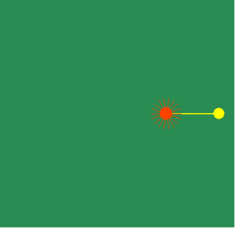
which he measured through his famous method of the three anomalies. (see animated figure 3b.)
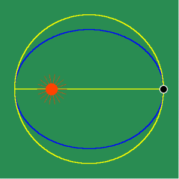
Kepler's method of calculation led to the paradox which prompted Leibniz to develop his concept of the differential and the integral.
Animated Figure 4: Huygens attempted to tackle the problem of non-uniform motion by expressing one non-uniform motion as a function of another, by the method of involute and evolute. In animated figure 4a the yellow curve is formed by the motion of unwrapping the white string from blue curve.
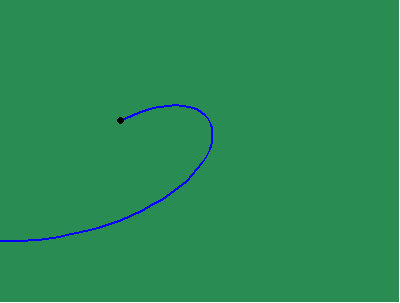
The yellow curve is called the involute. The blue curve is called the evolute. Thus, the changing curvature of the involute is a function of the changing curvature of the evolute. The white string is always perpendicular to the involute and always tangent to the evolute. Because of this, the involute is the envelope of circles whose centers all lie on the evolute. (See animated figure 4b, 4c.)
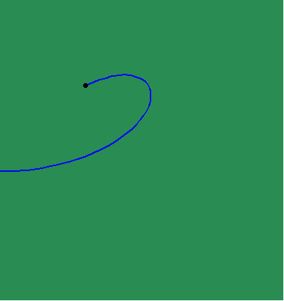
In other words, these circles are everywhere tangent (osculating) to the involute, and their radii are everywhere tangent to the evolute. Thus, the curvature of the involute expresses the effect of the principles acting tangentially on the evolute and vice versa.
Now, instead of thinking about these osculating circles being formed by the curves, think of the curves being formed by the osculating action of a circle whose size and position are changing according to a principle of motion. (see animated figure 4d.)
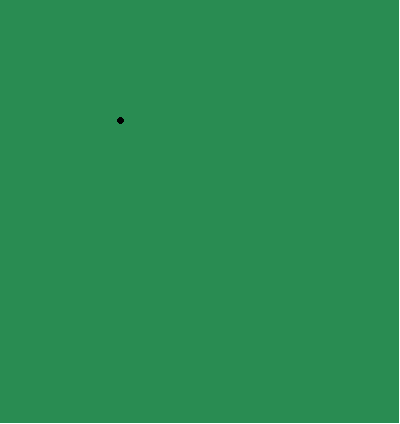
In this way, the curves are more truthfully understood, as the intended effect of a principle of change that is acting, everywhere tangent, to their visible expression.
Huygens used this relationship to build his famous pendulum clock, on the principle that the cycloid had both the property that its involute was another cycloid, and that it was the curve of equal-time for a body falling according to gravity. (See animations 4e,4f,4g,4h.)
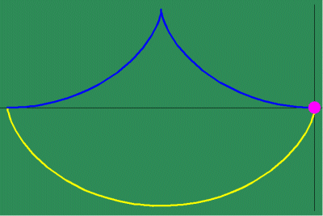
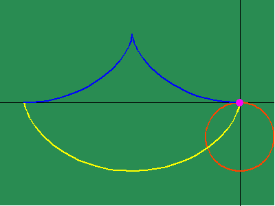
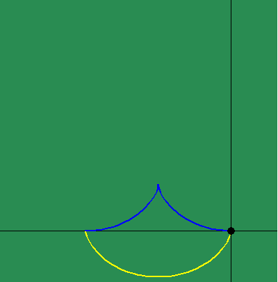
Animated Figure 5: While Huygens's method of the involute and evolute expresses non- uniform motion, it relies on a purely mechanical procedure, instead of expressing a principle of change directly. Leibniz solved this problem by expressing this principle of change through differential equations. To measure the differential, Leibniz projected the changing action in the infinitesimally small into the visible domain, in a manner similar to Plato's cave metaphor. To do this, Leibniz generalized the investigations of Fermat by defining a series of functions that depended on the changing curvature that resulted from the physical action. (See figure 5a.)
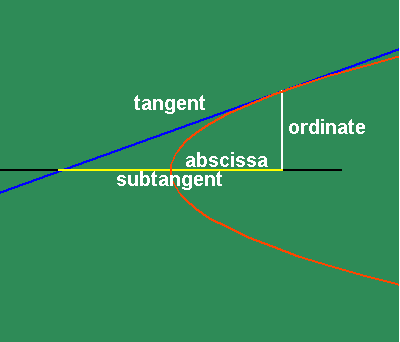
In particular, Leibniz investigated the motion of the subtangent, whose length is a function of the direction of the tangent, which in turn is function of the changing curvature. Leibniz considered the triangle formed between the point of tangency , the intersection of the ordinate with the axis, and the intersection of the tangent with the axis, as a projection into the visible domain, of the changing action in the infinitesimally small.
To get an intuitive grasp of this method, take the example of the parabola (See animated figure 5b )
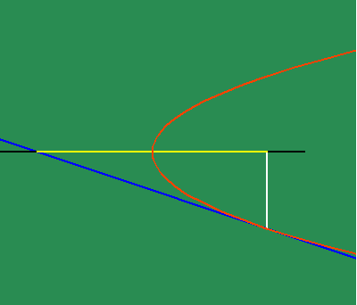
which illustrates the changing motion of the parabola's subtangent. Fermat had shown that the subtangent of the parabola is always twice the distance of the abscissa to the vertex. From this standpoint, the parabola can be entirely defined as the effect of a principle of change. Instead of thinking of the subtangent as a function of the parabola, think of the effect of the parabola as a function of a subtangent which is always bisected by its vertex, which, in turn, is defined as the point at which the subtangent is at its minimum. This way of thinking is a very elementary, pedagogical description of a "differential equation".
From this standpoint, Leibniz was able to discover the existence of physical principles that were not expressed by the visible form of the motion, but {were} expressed through the characteristics of differential equations. For example, the visible shape of the exponential curve can be defined as the curve produced by a continuous motion that is arithmetic in one direction, and geometric in a perpendicular direction. (See animated figure 5c.)
Yet, there is a unique property to this action, which Leibniz found through his infinitesimal calculus. The exponential curve is the curve whose subtangent is always constant. (See animated figure 5d.)
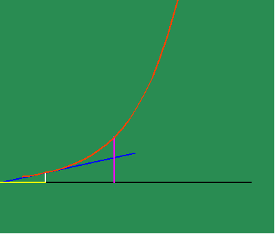
In other words, the exponential curve is the curve whose characteristic of change is the same as itself!
This discovery highlights a crucial distinction between Leibniz's method and Huygens'. With respect to the involute and evolute, the cycloid is the curve whose change is the same as itself. But from the more general method of Leibniz, it is the exponential curve that exhibits a characteristic of self-similarity. The importance of this distinction is underscored by Leibniz's discovery of the relationship between the exponential curve and the catenary, which highlights the fact that the catenary expresses, more universally, the principle of least-action, not the cycloid.
As a result of this investigation, Leibniz discovered an entirely new type of transcendental function. He realized that even though every exponential had constant subtangents, the absolute length varied with the constant of proportionality. Leibniz found the existence of a new number, which he called, "b", which forms the exponential curve whose subtangent is equal to unity. (See figure 5e.)
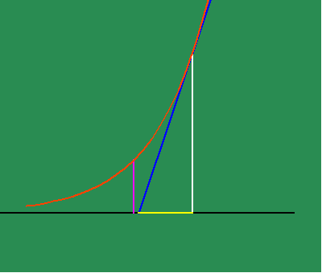
(Euler later changed the name of this number to "e", whose historically misleading and quasi-blasphemous moniker it still wears today.)
With this new power to investigate physical action as the effect of a principle of change, new characteristics are brought to the surface that otherwise had remained hidden. For example, when the apparently uniform circular action is investigated from the standpoint of change of its subtangent, the existence of two discontinuities emerge, that otherwise were not visible. This is where the subtangent becomes infinite, which correspond, in Gauss's idea, to the \/-1 and -\/-1. (See animated figure 5f.)
Similarly, when the changing subtangent of the catenary is investigated, a discontinuity is revealed at the catenary's lowest point, whose significance is brought more clearly to light, when it is noted that this is point of intersection of the two contrariwise exponential curves from which it develops. (See animated figure 5g.)
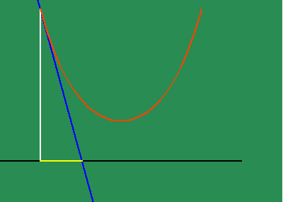
As we have noted elsewhere, this also implies the catenary true light only shines bright in the complex domain.
From these examples, we can see that new principles emerge when physical curves are understood as the effect of a principle of change. In both the case of the circle and the catenary, the curves are everywhere continuous and smooth, but there is a discontinuity in the principle of change. Yet the curve does not disappear at these points, and neither does the principle of change. Rather, the sudden appearance of these discontinuities signals to us the existence and action of a new, undiscovered principle.
Leibniz recognized the existence of this new principle and indicated where
to look, but it was Gauss, and later, Riemann, who discovered that its expression
was in the complex domain, which will be developed in the next installment.